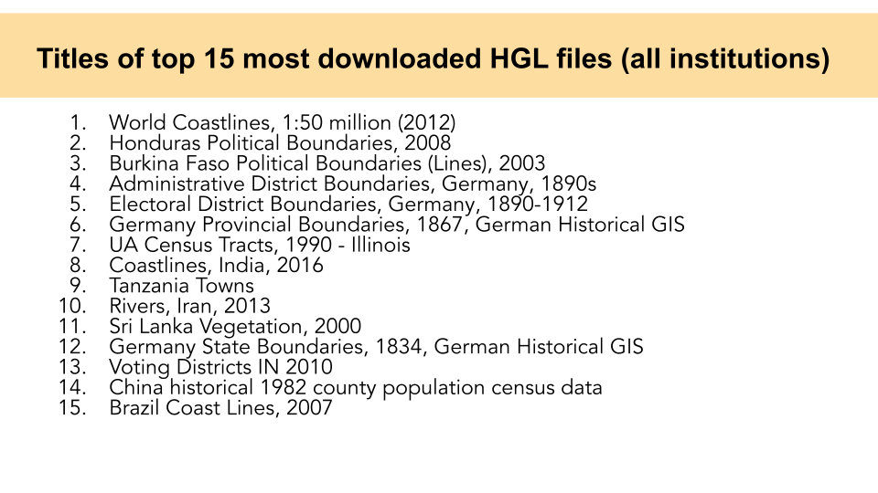
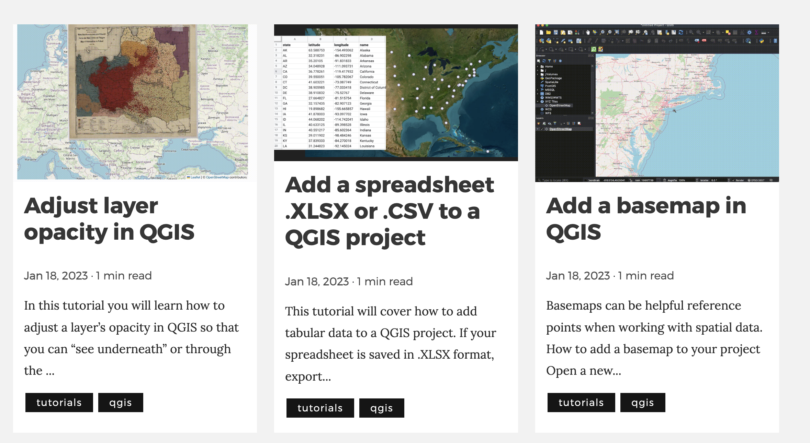

Harvard Map Collection


Classes
GSD: Spatial Analysis


 Map created by
GSD students Aeshna Prasad, Michael Lidwin, Megan Mcglinchey, and Mehvish Jamal working with the Map Collection.
Map created by
GSD students Aeshna Prasad, Michael Lidwin, Megan Mcglinchey, and Mehvish Jamal working with the Map Collection.
Data management
 OldNYC: Mapping Historic Photographs at the NYPL
.
OldNYC: Mapping Historic Photographs at the NYPL
.
 1880 census from Archive.org
.
1880 census from Archive.org
.
 ArcGIS Map
comparing 1890 atlas to today.
ArcGIS Map
comparing 1890 atlas to today.
Harvard Geospatial Library (HGL) - demo

Research


 Record from Harvard Map Collection card catalog
.
Record from Harvard Map Collection card catalog
.
Services and Resources
Tutorials
 The Harvard Map Collection maintains a series of tutorials, guides, and updates about mapmaking.
Consultations
The best way to find maps or data is to make an appointment on the Harvard Map Collection website .
Questions
Or, you can follow up with any questions by emailing: